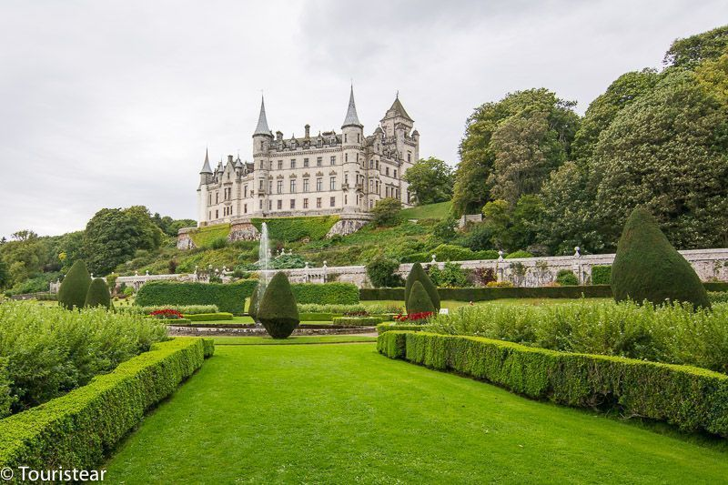

Salpicado de castillos, lagos y montañas, Escocia es posiblemente uno de los destinos más vírgenes y naturales de Gran Bretaña. Su tierra ha inspirado numerosas historias y leyendas. Algunas de ellas reales, como la lucha por la libertad que William Wallace inició y que hoy en día se repite cual eco en lo alto del castillo de Stirling. Otras, basadas en la imaginación de aquellos que dieron más de un trago al agua de la vida, como llaman al whisky. Algunas las encontramos en las pedregosas calles de Edimburgo, la ciudad impasible al tiempo que inspiró a grandes escritores como Louis Stevenson, Sir Walter Scott o James Matthew Barrie. En contraposición, Glasgow es el símbolo de la modernidad escocesa.

20 Castillos de Escocia que tienes que visitar
Hoy te quiero enseñar los castillos de Escocia que hemos visitado en el road trip en coche que hicimos por este fantástico país y seguro que vas a querer conocer.
Como muchos ya sabéis Escocia es uno de mis países favoritos del mundo, si ya sé que tiene un clima un poco gris, que llueve y que hace frío. Pero Escocia tiene esa magia que me ha hechizado y que ha hecho que me encante y que siempre tenga ganas de volver.
Además, me encantan los castillos y en Escocia hay muchos y para todos los gustos.
Escocia tiene una cantidad increíble de castillos desperdigados por toda su superficie, se cree que hubo más de 3000! ¿Te lo puedes imaginar? Sinceramente no sé cuánto tiempo requeriría recorrer todos los que quedan en pie.
Castillo de Edimburgo
El castillo de Edimburgo fue uno de los primeros castillos que visitamos en nuestro road trip por Escocia.
Se encuentra situado encima de una colina, desde la cual se tienen una vistas de 360º de la ciudad y es tan grande que parece un pueblo.
La visita al castillo la puedes hacer por tu cuenta, con un guía o con audio guía.
Con más de un millón de visitantes al año, el castillo se alza imponente sobre la colina de Castle Hill ofreciendo unas majestuosas vistas del centro de la ciudad.
Con tres de sus lados protegidos por escarpados acantilados, la única vía de acceso al castillo es la empinada Castlehill, en el comienzo de la Royal Mile, una de las avenidas más concurridas de la ciudad que trascurre hasta el Palacio de Holyroodhouse.